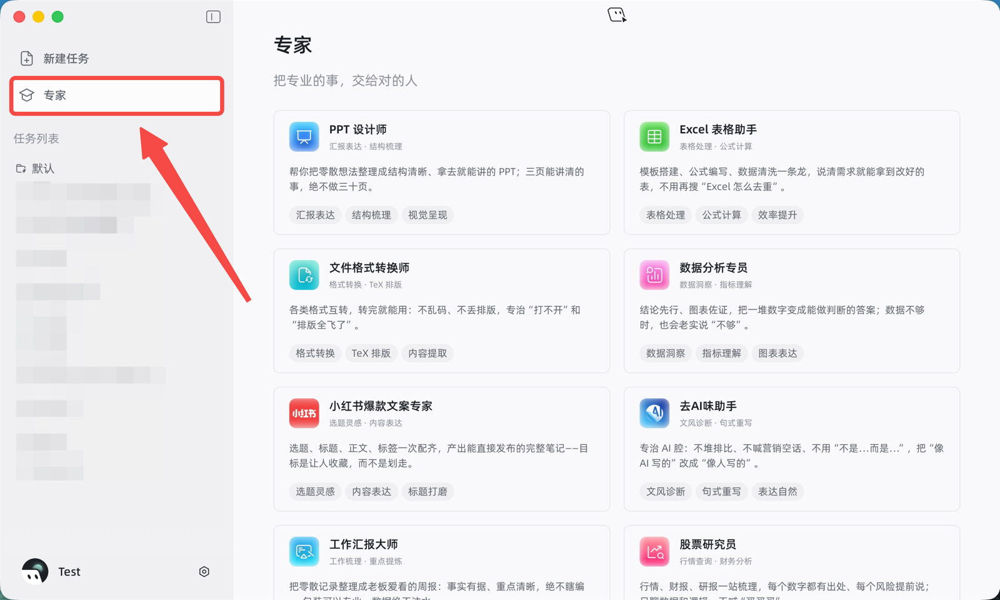
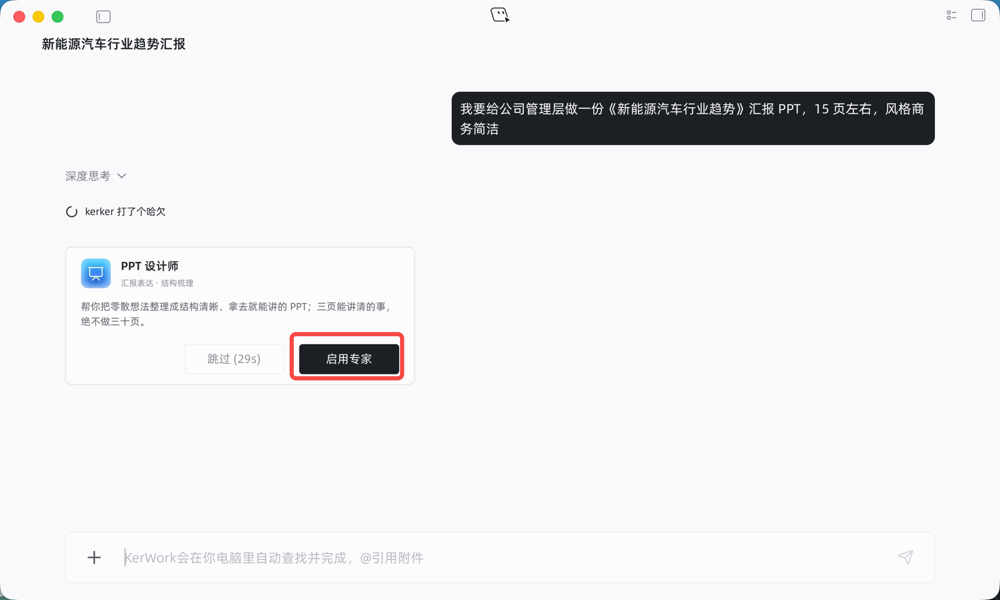
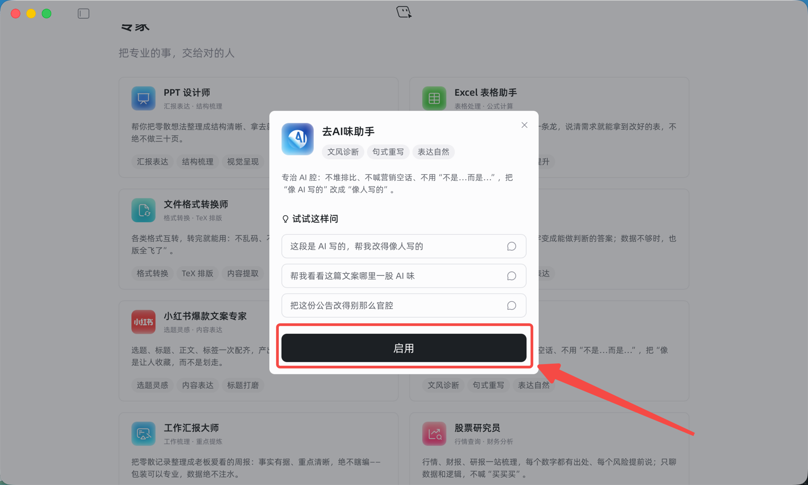
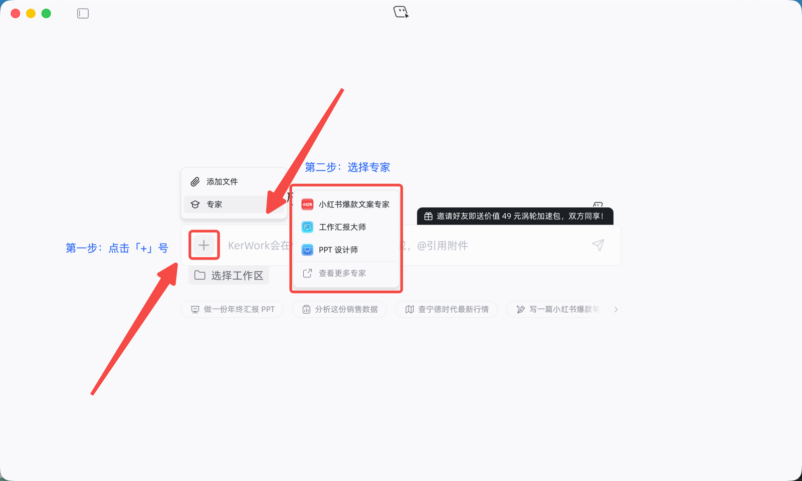

专家
把专业的事，交给对的人。KerWork 针对不同任务场景提供专业工作模式，帮助你更高效地完成特定场景任务。
专家是什么
专家是 KerWork 针对不同任务场景提供的专业工作模式，在特定领域中能以更明确的方法和视角完成任务。
你不需要记住每位专家的名称或能力。直接说清楚想完成什么，KerWork 会自动判断是否有合适的专家，并向你推荐。
例如，你可以输入「帮我分析这份销售数据，找出销售额下降的原因」。KerWork 识别到这是数据分析任务后，会推荐「数据分析专员」。点击「启用」，KerWork 就会先检查数据，再完成分析并整理结论。

点击侧边栏「专家」，查看专家列表
如何使用专家
最简单的方式：直接说出你的任务，KerWork 自动匹配专家。
- 用自然语言描述想完成的任务。
- 当任务适合使用专家时，KerWork 会推荐对应的专家。
- 点击「启用」，KerWork 会按照该专家的专业方法和流程继续处理任务。

说出任务后，KerWork 自动匹配并推荐专家
主动选择专家
如果你已经知道想使用哪位专家，可以从专家列表或输入框快捷入口主动选择。
一、从专家列表选择
点击侧边栏「专家」，查看专家的能力介绍和适用场景，选择符合的专家。点击「启用」后，KerWork 会在新任务中启用该专家，你可以直接输入任务并发送。

在专家列表中选择符合的专家并启用
二、从输入框快捷列表选择
点击输入框左侧的「+」，选择「专家」，即可打开专家快捷列表。快捷列表会优先展示你置顶的专家和最近使用的专家，点击专家名称即可启用。

输入框「+」→「专家」，快速启用常用专家
使用专家时的小建议
说清材料与目标：说明你的已有材料和希望得到的结果。
补充交付要求：制作 PPT、报告等交付物时，可以补充受众、用途、篇幅和风格。
免责声明
专家是 KerWork 提供的 AI 角色化辅助能力，生成的内容仅供参考，不能替代医疗、法律、投资、财务等领域的专业服务。涉及重要事项时，请结合实际情况和可靠信息进行判断，必要时咨询相关领域的专业人士。
帮助中心更新 · 更新日志
V 0.11.0（日期待定）
本次更新新增专家功能，帮助你更高效地完成特定场景任务。
- 新增专家功能：从创意写作、数据分析到金融投资、科研论文等，选一个适合你的专家，更懂你的任务，也更懂该怎么高质量地完成。
- 修复已知问题，优化用户体验。
本文为 KerWork 官网「使用文档」V0.11.0 新增章节「专家」，对应官网文档站 docs.kerwork.cn/guide/basic-usage。